87 runs to a working policy
What went wrong, and what went right, putting a vision-language-action model on a robot arm it had never seen, in a room it had never seen.
This began as a master's thesis, and I started it with no hands-on experience of vision-language-action models. What follows is an honest recap of 8 months: what actually happened, what worked, what did not, and how much of it was never going to turn up in a paper. Research articles report the configuration that worked. They rarely report the runs that did not, the default values that quietly sabotage a small fine-tune, or the settings that sit outside training altogether and still decide whether anything moves. Those are the parts that determine whether a policy runs on your hardware, in your room, so those are the parts this article is about.
Based on my master's thesis, Adaptation and Generalisation of a Vision-Language-Action Model on a New Embodiment, Institute of Technology, University of Tartu, 2026. Supervised by Karl Kruusamäe and Agnes Luhtaru.
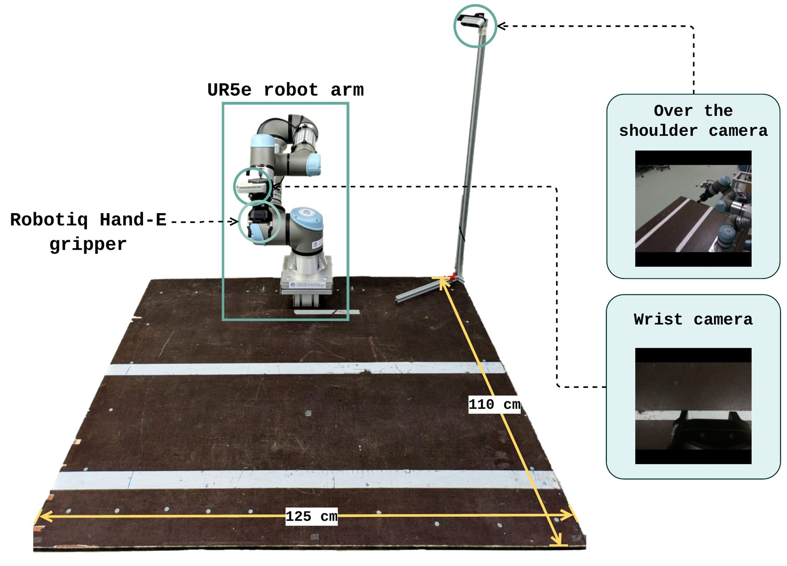
Headline results
Every trial scores four sequential stages, 0.25 each. Task progress is not a success rate. It is how far along the chain the arm gets before it stops. The first bar shows the real per-stage rates, the second the mean across 17 conditions.
1. Nobody can tell you which end of the range you land on
A vision-language-action model is supposed to arrive already knowing how to be a robot. You add a handful of demonstrations, and you point it at your task. The published results do not say that. They say the outcome runs from 0% to 100%, and the papers rarely isolate what decides it.
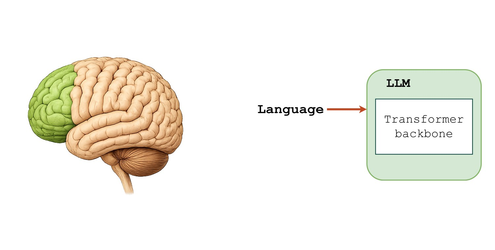
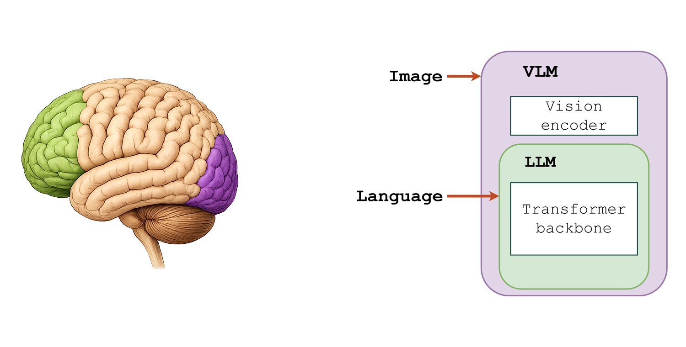
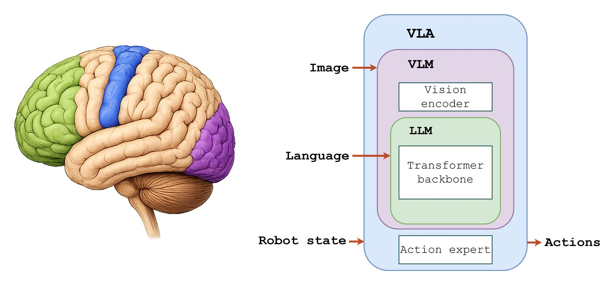
Here is the deployment literature I could find, with my own result added at the bottom.
Table 1. Vision-language-action deployment studies.
| Study | Model | Robot | Approach (demos) | Result |
|---|---|---|---|---|
| Penn PAL Lab | π₀-FAST | Franka | Zero-shot | 42% progress |
| Chen et al. | OpenVLA | xArm | Zero-shot | 0% |
| Su et al. | OpenVLA-OFT | Soft arm | Zero-shot | 0% |
| Li et al. | π₀ | Mobile ALOHA | Zero-shot | 0% |
| Su et al. | OpenVLA-OFT | UR5 | Fine-tuned, 50–100 | 100% / 70% |
| Kim et al. | OpenVLA-OFT+ | ALOHA | Fine-tuned, 20–300 | 51–100% |
| Hu et al. | π₀ / π₀.₅ | Simulation | Fine-tuned, 100–200 | 60–100% |
| Li et al. | π₀ | Mobile ALOHA | Fine-tuned, 100 | ~60% |
| This work | π₀.₅ | UR5e | Fine-tuned, 10 | 80% ID / 40% OOD |
Read the zero-shot rows first. Four studies tried it, and three scored exactly zero. The fourth is the Penn PAL Lab at the University of Pennsylvania, who reached 42% average task progress across more than 300 trials. Theirs is the one case where the checkpoint already matched the hardware: they ran π₀-FAST-DROID on a Franka, and the DROID checkpoint was fine-tuned on a Franka. They described the model as refreshingly easy to set up.
I had a UR5e, and there is no UR5e checkpoint. UR5e data sits somewhere in the π₀.₅ pre-training mix, but only as a small share. The base model has no notion of my workstation, my cameras, my table-mounted bin, or my task. Zero-shot produced nothing usable. The arm moved without any goal-directed structure, and the gripper twitched occasionally.
So the ladder of adaptation effort runs roughly like this. Best case, a checkpoint already exists for your exact hardware. Next, your embodiment forms a large share of pre-training. Worst case, your hardware appears only as a small share. I was on the bottom rung. Getting from there to a policy that could pick up a block took 87 training runs and 33.8 GPU-hours, and most of those runs were exploratory. They were not 87 attempts at the same recipe. They were how I worked out which settings mattered at all, because nothing told me in advance which of them were load-bearing.
2. When you get stuck, does anyone help?
Peer-reviewed deployment work mostly reports the runs that worked. The problems people actually hit appear in issue trackers, and they repeat with striking consistency.
- The pick never completes. One user fine-tuned π₀.₅ on 138 episodes of pick-and-place. The loss came down. The controller followed the predicted pose to within a centimetre. The robot never completed the pick.
- Normalisation statistics may destroy the policy silently. One user's π₀.₅ fine-tune scored 1% on LIBERO where the released checkpoint scores 96%, and mismatched normalisation statistics are the leading suspect. The issue is unresolved.
- Reimplementations do not match. The LeRobot PyTorch port of π₀-FAST reached 30–60% on LIBERO against the paper's 80%. Nobody identified the cause.
- Phrasing changes everything. The Penn PAL group scored 0% on "Close the toilet" and 100% on "Close the white lid of the toilet". Same model, same robot, same task.
I hit the gripper failure, then the normalisation failure, then the phrasing sensitivity. So I pulled every issue from three of the most-used open VLA repositories, openpi, OpenVLA and lerobot, and asked the question that actually matters when you are stuck at midnight: does anyone help, and is the help any good?
Working out who counts as "the project" is harder than it looks. GitHub only marks a commenter as a member when their organisation membership is public, and both Physical Intelligence and the OpenVLA group keep theirs private, so their staff appear as strangers. Counting commits instead is closer, but it misses people who answer constantly and rarely commit code. On openpi that includes Sergey Levine. Reading the threads and adding those people moves the no-reply-from-the-project figure from 67% to 61%, which is a large enough swing that any single number here deserves suspicion.
| Who replied | openpi | OpenVLA | lerobot |
|---|---|---|---|
| Someone from the project | 38.9% | 49.7% | 51.3% |
| Only other users | 32.3% | 26.1% | 22.1% |
| Nobody at all | 28.8% | 24.2% | 26.6% |
| User-opened issues | 489 | 306 | 1,329 |
Table 2. Outcomes across 2,124 user-opened issues. Issues opened by the projects themselves are excluded.
Roughly a quarter of the people who report a problem get no response from anyone. That number is remarkably stable across all three projects, and it is the one I would take with me: if you post, the base rate of silence is about 1 in 4.
The more interesting column is the middle one. On openpi, 32% of issues are answered only by other users, with nobody from the project involved. To judge whether those answers are any good, I read 128 of the answered threads closely, staff-answered and user-answered alike, and graded the best reply in each. 55% contained a concrete fix, config or explanation that would plausibly unblock the reporter, and another 29% offered a workaround or a useful pointer. Independent users, not staff, supplied that best answer in roughly 2 cases out of 5. The community is doing a substantial share of the support work.
The pattern is not what I expected. Questions with a concrete broken thing attached, a stack trace, a robot that will not move, mostly get answered. Questions about why the model behaves as it does, or asking for something to be released, mostly do not. That is a reasonable way for a busy team to triage, and it also means the further your problem sits from a reproducible error, the more you are on your own.
What the trackers cannot tell you is how many of those answers were right. My grading measures whether a reply looks like it would help, not whether it did. Two accounts in the openpi tracker post templated, plausible-sounding diagnoses across five to eight unrelated issues while promoting their own tools, and they inflate any count of "somebody replied".
Some of that is ordinary academic life. A paper ships, students graduate, and the repository becomes an artefact rather than a product. No maintainer owes anybody free support. But the models are presented as usable, the code is presented as open, and when the tracker goes quiet the practical knowledge stops being recoverable.
Issue 912 is the case I keep returning to, because it is my own failure written by someone else. A user fine-tunes π₀.₅, the arm reaches the object and lines up correctly, and then it emits near-zero actions and pushes the object instead of grasping it. Two more people report the identical symptom on their own setups, one of them in simulation. Nobody from Physical Intelligence has ever replied. One commenter offers a plausible hypothesis about gripper normalisation, but never confirms they reproduced or fixed it, and the same account promotes an unrelated tool elsewhere in the tracker. The issue is still open. Across every grasping issue in the tracker, not one reaches a confirmed fix.
3. Before any of that: getting the arm to talk to the model
Every framework I evaluated documents the same 4 steps: install, convert your data, train, serve a policy. The step they all omit is the one between a served action vector and a joint that turns. On a platform the framework supports, that layer already exists. LeRobot's native robot list is small research arms, from SO100 and Koch through to Reachy2 and the Unitree G1, and a UR5e is not on it. So I wrote the layer myself: the recorder, the dataset converter, and the bridge that carries actions to the arm. This section is that layer, in the order I met its problems.
The control interface is the first fork
I drive the arm over RTDE, the real-time interface Universal Robots provide, and stream joint targets with servoJ. That was not the only option. ROS is the other obvious route, and which one you pick depends on your arm and on what your lab already runs. Decide on day one either way, because the recorder, the bridge and the safety clamp all get written against that choice, and the framework has no opinion about it at all.
Put the cameras where the model's training data had them
Check what the model consumes before you buy anything. π₀.₅ takes RGB only, so the depth stream on my RealSense cameras sits unused. The camera model matters little. The placement matters enormously, and my rule for it is simple: put the cameras where the model's own training data had them. I searched Physical Intelligence's blog posts and papers for photographs of their workspaces, noted where the base and wrist cameras sat and at what angle, and copied that geometry as closely as my table allowed. A fine-tune on 10 episodes will not teach the model a new viewpoint. It works best from one it already knows, and section 7 prices the mistake: a front-left shift of the shoulder camera cut task progress from 0.80 to 0.25, and a 2 cm shift of the wrist camera cut it to 0.25 as well.
After the sensor, reuse the framework's own image functions. openpi resizes, pads and reinserts the images at specific points in its pipeline, and any substitute you write there trains cleanly and fails on the robot. I also disabled auto-exposure for the dataset and fixed a separate value per camera. 100 for the base, 150 for the wrist, because exposure that drifts between recording and deployment is distribution shift you chose not to control. Address the cameras by serial number rather than by index, so the base and wrist streams can never swap.
Mounts, cables, and the three lengths of bring-up
The shoulder camera stands on an extrusion frame clamped to the table. The wrist camera sits on a 3D-printed bracket, and most of the other fixtures were printed too. Make the shoulder mount rigid, because every millimetre it drifts after recording is unplanned distribution shift. The wrist cable runs zip-tied along the arm and carries two duties that pull against each other: enough bandwidth for the stream, and enough slack for the arm's full reach without a tug at the connector. Plan that cable before the first episode. Mine caused no USB problems, but it is the component most likely to spoil an episode without an error message.
Bring-up then came in three stages of very unequal length. The arm moved almost immediately. Good motion took very long. A completed task took very long again, and that escalation, not any single obstacle, is the honest shape of the project. The gripper owns the ugly middle. It does not speak RTDE at all: the Robotiq gripper listens on its own TCP socket, port 63352, behind a URCap running on the pendant, which means a second protocol on a second connection for one robot. Remote gripper control on a UR5e is possible but awkward, and its failure mode is silence rather than an error.
Learn what normalisation the model expects before you record, because it differs per joint, and the gripper dimension follows its own convention again. Beyond that, almost any gripper serves, and one later result made the point sharply. The trained policy transferred to a different gripper, with a different stroke, different mechanics and a different appearance, and lost only 5 points of task progress (section 7). The gripper appears in every wrist-camera frame the model was ever trained on. It had every chance to bind its behaviour to how its own hand looks, and it did not.
Decide where inference runs before you need it to work
Training and inference rarely share a machine, and the split is arithmetic rather than preference. openpi wants more than 70 GB of VRAM for a full fine-tune and more than 8 GB to serve the result. My 16 GB laptop GPU can serve but cannot train, so training went to an HPC cluster and the policy server ran on my own machine on the same network as the robot. Serving from the cluster failed against its network restrictions. A rented remote GPU works, at the price of extra latency in the loop. My local cycle took 241 ms against the 73 ms Physical Intelligence reports on an RTX 4090, and the actions-executed-per-call setting must absorb whatever latency you have, section 6 shows that one setting swings task progress from 0.25 to 0.80 on identical weights.
Recording data without a leader arm
Leader–follower teleoperation is the standard on research arms and the fastest route to natural motion. An industrial arm ships without a leader. The fallback worth knowing is LeRobot's phone teleoperation, which drives the arm from the phone's IMU, it needs sensitivity tuning, a stable connection and some smoothing, and the community built it for LeRobot's own small arms rather than for anything industrial. On my phone it did not work well enough. So I guided the arm by hand in freedrive, recorded the joint trajectory, reset the objects, and replayed the trajectory with the cameras running. It is slow, and the replay pass demands that every object return to its exact position. In exchange the motion is smooth and my body never appears in a training frame. OpenVLA's documentation independently recommends the replay half, replay demonstrations first to verify the robot can execute them, which is the same idea reached from the other direction.
2 data decisions belong before the first episode. First, absolute or delta actions: learn what the model expects, then record absolute and convert, because that conversion is trivial and the reverse is not. Second, frame synchronisation between the cameras and the joint stream: I did none, perhaps I should have, and I cannot tell you what it cost me. That one stays open. For the pipeline itself, borrow rather than build. The Open X-Embodiment ecosystem has working conversion code for robots like yours, and Rerun, the data tooling LeRobot itself uses to inspect runs, exists precisely because multimodal robot data gets messy, and a quality problem becomes invisible the moment it is inside a dataset.
Read the issue tracker like documentation
The data and policy config changed the model's behaviour more than any other file I touched, and the correct values are mostly not written anywhere. Use the delta action transform, that area of openpi has carried a series of bugs, and delta is the setting that works. When my gripper refused to close, I oversampled the gripper-transition frames, one of the 7 remedies section 4 accounts for. The rest is understanding the model plus trial and error, and the fastest way to compress it is blunt: point an AI agent at the framework's entire issue tracker and make it report. The tracker is not worth posting to, for the reason section 2 measures. It is very much worth reading, at machine speed.
If I rebuilt the stack today, I would make it modular and base it on LeRobot rather than write the recorder, converter and bridge as one custom stack against 1 robot. The custom route worked. It is also welded to this arm, and none of it will survive a change of hardware.
DRY_RUN=1 logs every command without moving the arm, and FAKE_CAM=1 runs the loop without cameras, and I recommend verifying each layer alone before you stack the next. Anything else is guessing, and it is the annoying kind.4. What actually moved the needle across 87 runs
Most of the 87 runs did not explore interesting parts of the hyperparameter space. They found out which of openpi's reasonable defaults are calibrated for pre-training runs and quietly wrong for a 500-step fine-tune.
warmup_steps = 50, not the inherited 1000
This single change mattered more than anything else in the project. The default ramps the learning rate over the first 1000 steps, which is correct if you train for 30,000. On a 500-step budget the learning rate never reaches its configured peak, so the whole run executes at a fraction of the value you set. The loss still falls, so the dashboard looks healthy, and the policy underfits relative to the compute you just spent.
Reload the pretrained normalisation statistics
The convention is to compute normalisation statistics from your own dataset. That is right for medium and large datasets and wrong for small fine-tunes. 10 episodes narrow the envelope to whatever joint poses those 10 episodes happened to cover, and anything slightly outside clips into the saturated tails. Reloading the statistics that ship with pi05_base for ur5e gives a much wider envelope collected across many robots. This cost me weeks of debugging a policy that "diverged at the edges of the workspace".
save_interval = 30, not 1000
A mechanical point with outsized consequences. At the default you get exactly one checkpoint from a 500-step run, and no way to find the window where the policy works. Everything in the next section depends on having 17 checkpoints to test instead of 1.
10 episodes beat 20, 30 and 50
This is the result I would least have predicted. 10 episodes, about 13 minutes of demonstrations, produced a deployable policy. Datasets of 20, 30 and 50 episodes all failed at the same place. They all failed at the grasp, with the gripper output staying near zero regardless of where the object sat. Each larger dataset got its own hyperparameter search after it failed at the ten-episode settings, so this is not a tuning artefact.
The failure is specific, and it is visual. Tested against the training images the gripper closes correctly at the grasp position. Run against the live camera feed on the robot it stays open. The gripper overfits to the training images far earlier than the model learns accurate motion, so on the larger datasets no single checkpoint has both a working trajectory and a working gripper.
7 remedies went into trying to separate the 2: smoothing the gripper ramps so the open-to-closed transition spreads over several frames, oversampling the transition frames five-fold, weighting the gripper dimension in the loss, freezing the SigLIP visual backbone, lowering the learning rate, applying stronger crop and colour augmentation, and thresholding the gripper command at inference. None of them made the gripper close on the robot. Demonstration consistency mattered far more than demonstration count, which is the opposite of the lesson supervised vision teaches.
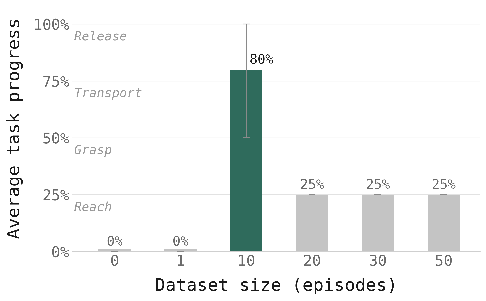
π₀-FAST was the wrong family for this task
π₀-FAST was slow enough at inference to be unusable here, so it left the search early. Its runs also never produced a working gripper, because the FAST tokenizer compresses action chunks with a discrete cosine transform that handles a step function badly.
The configuration that worked
- model
- π₀.₅, full fine-tune from pi05_base
- dataset
- 10 episodes, ~7,600 frames, 10 Hz
- norm stats
- reloaded from pi05_base/assets/ur5e
- action
- absolute targets, delta transform on
- peak_lr
- 2.5e-5, warmup 50
- batch
- 16
- budget
- 500 steps, best checkpoint ~150
- horizon
- execute 6 of 15 predicted actions
2 things in that list look like infrastructure and are actually part of the policy. The reset pose the bridge moves to before each trial must match the first frame of the training episodes to within a few degrees, otherwise the policy extrapolates from an unfamiliar state before it does anything. The prompt string must lexically match a task label seen in training: "Pick up the blue block and place it in the cardboard box" works, and "Grab the blue block and put it in the box" measurably degrades behaviour.
5. The loss curve lied for the whole run
With a checkpoint every 30 steps, the shape of training becomes visible on the robot. It is not the shape the loss suggests.
At step 120 the policy scored zero, stopping about 15 cm short of the block. At step 150 it worked: 0.80 in-distribution, and 0.70 out-of-distribution, which means it generalised to block positions it had never seen. At step 210 the in-distribution score was still 0.75 and the out-of-distribution score had collapsed to 0.25, with every trial failing at the pick. The training loss gave no warning: it sat low and flat across the whole window, and at step 210 it was no higher than at 150.
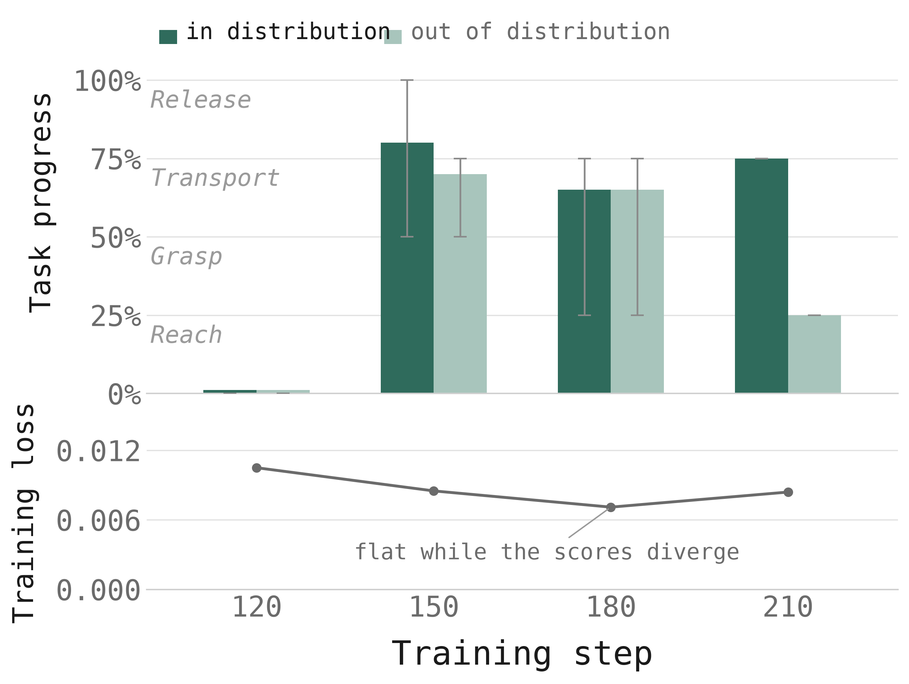
The mechanism is legible in hindsight. Early in training the model learns the structure of the task: reach, grasp, transport, release. Later it memorises the specific joint trajectories that work for the positions in the training set. That is an improvement on those positions and a catastrophe everywhere else. Behaviour-cloning loss measures how closely predicted actions match the demonstrations, so it cannot detect this. Matching the demonstrations more exactly is precisely what overfitting looks like.
The same failure appears at its limit in a two-stage experiment. I trained 10,000 steps on a colleague's 800-episode dataset from a different task on a different workstation, then fine-tuned 300 steps on my 10 episodes. The result drove the arm to the same joint configuration on every trial, regardless of where the block sat or what the prompt said. Warm-starting from an earlier stage-one checkpoint changed nothing, so the small second-stage dataset caused it rather than an over-baked first stage.
The policy also got faster as it memorised. The mean time to complete the pick fell from 2:37 at step 150 to 0:26 at step 210, because the arm moved directly to positions it had already seen instead of searching for the object.
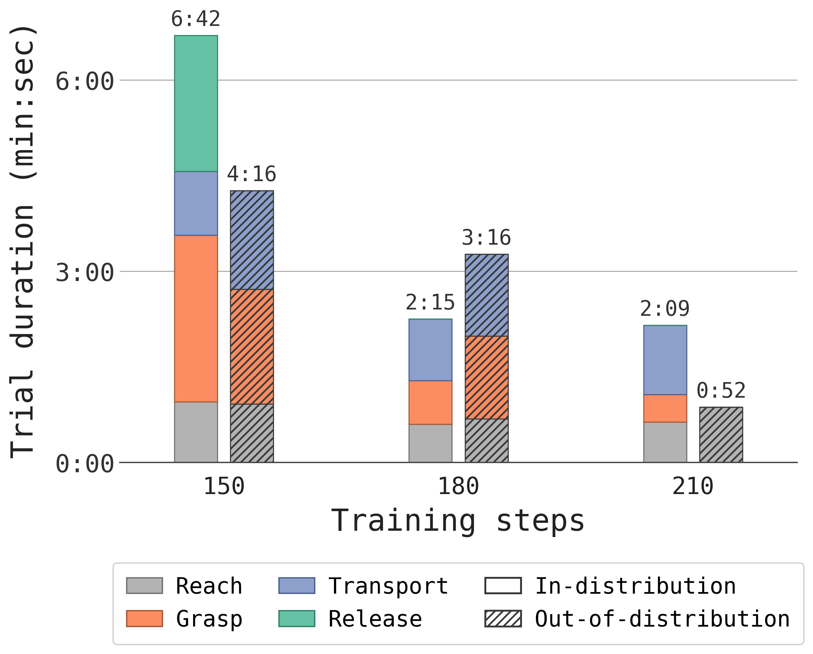
6. The setting with no gradient attached to it
As trained here, π₀.₅ predicts a chunk of 15 actions per call. The bridge does not have to execute all of them. It can play the first K and then re-query with a fresh observation. That number is not learned, does not appear in any config the trainer sees, and has no effect at all on the loss. On the same checkpoint, the same dataset and the same weights, it moves task progress from 0.25 to 0.80.
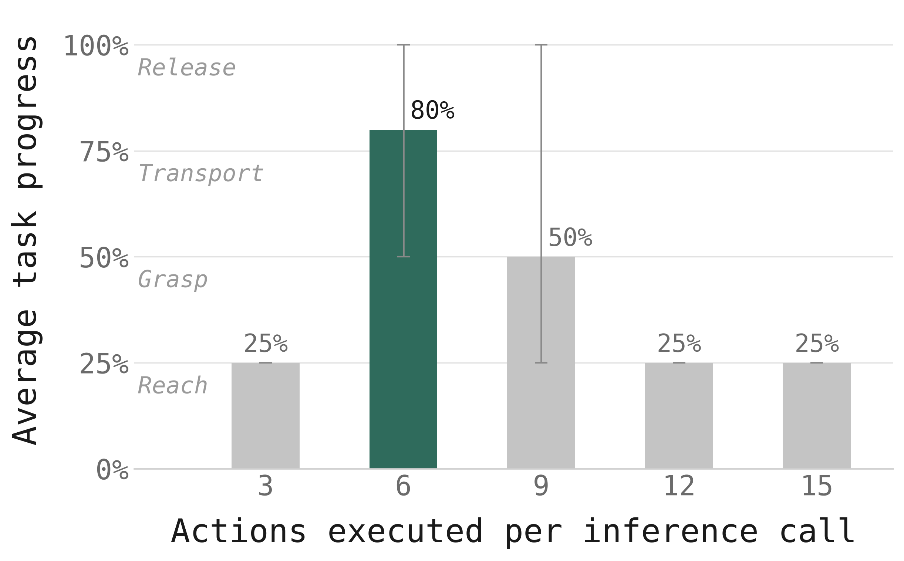
Both ends fail at the grasp, for opposite reasons. Too short, and the policy re-queries before the gripper finishes closing, so it overwrites its own command mid-actuation. Too long, and it commits to a plan built from an observation that has gone stale, with no chance to correct. Training optimises the model to predict 15 coherent steps from one observation, but deployment hands it a new observation at every replan, and the value of that new information outweighs the cost of throwing most of the chunk away.
This matters beyond one number. The swing from 0.25 to 0.80 is larger than anything I achieved by changing the training configuration, and no offline metric would ever have revealed it. The inference configuration is part of the model, so log it with every evaluation result.
7. How narrow the win actually was
A working policy is not the end of the question. The interesting part is where it stops working, so I tested it against 17 out-of-distribution conditions using the ⋆-Gen taxonomy. One factor changes at a time, and everything else stays close to training. Across all 85 trials, not 1 completed the release stage.
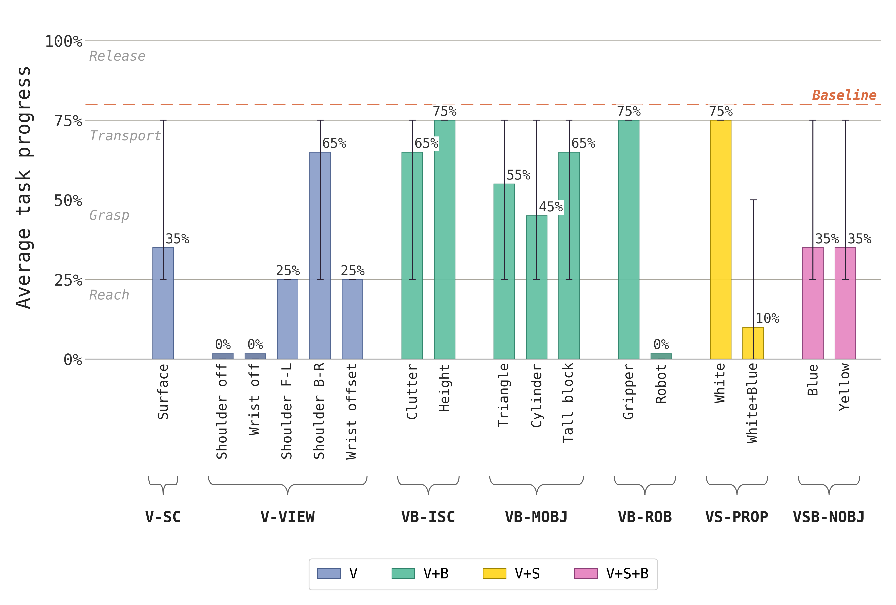
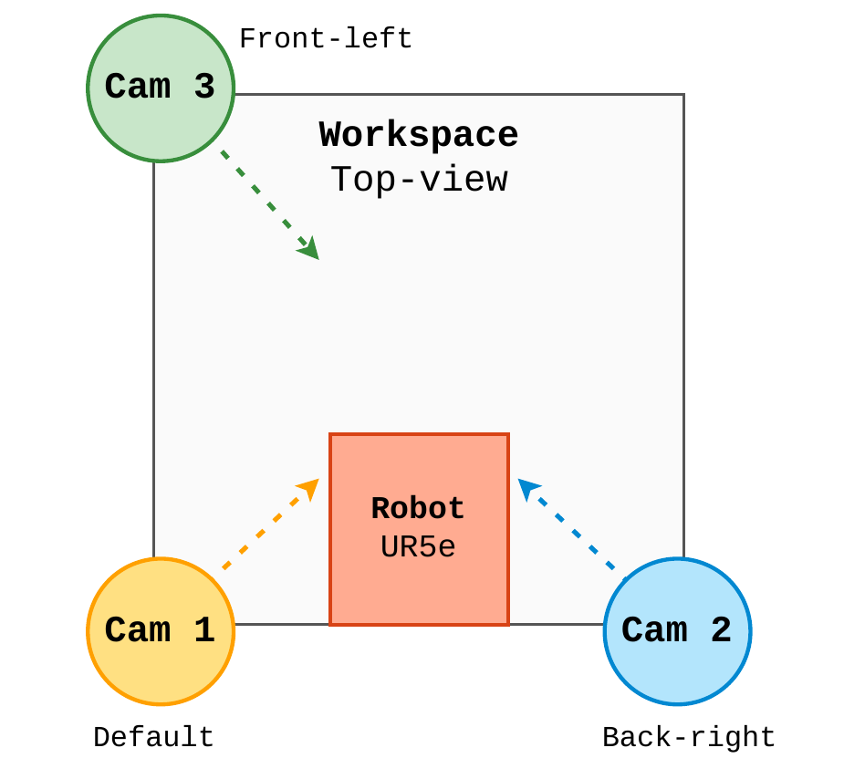
-
Held up. 65% to 75%
A different gripper entirely, the Robotiq 2F-85 in place of the Hand-E, scored 75%. The block raised on a platform scored 75%, and added clutter scored 65%. A white block with an instruction naming it scored 75%. The gripper result surprised me most. The gripper is visible in every wrist-camera frame, so the policy could easily have bound its behaviour to how it looks, and it did not.
-
Degraded. 25% to 65%
Object shape changes cost between 15 and 35 points: a taller block scored 65%, a triangular prism 55%, a cylinder 45%. Camera moves were worse and asymmetric. A back-right shoulder shift still reached transport at 65%, a front-left shift dropped to 25%, and a 2 cm wrist-camera offset dropped to 25%. Changing the table surface to a white cloth scored 35%, where reach succeeded every time and the grasp closed on 1 of 5 trials.
-
Broke. 0% to 10%
Covering either camera scored 0%. A different robot arm scored 0%. The language-conflict scene scored 10%: asked to pick up the white block with the trained blue block also in frame, the policy went to the blue block on 4 of 5 trials.
2 conclusions follow from the shape of that list. The policy treats the camera image as a fixed coordinate frame rather than inferring the geometry of the scene, so any change to the frame moves it off the mapping it learned. And the language instruction is too weak to override the visual prior, because whenever a trained object was in view the policy went to it regardless of the words.
Neither finding is unique to my setup. LIBERO-Plus reports π₀ dropping from 94.2% to 15.8% under viewpoint changes, and LIBERO-PRO reports a fall from above 90% to 0% when object starting positions change. Every model the ⋆-Gen authors and the Penn PAL group tested showed the same weak semantic generalisation.
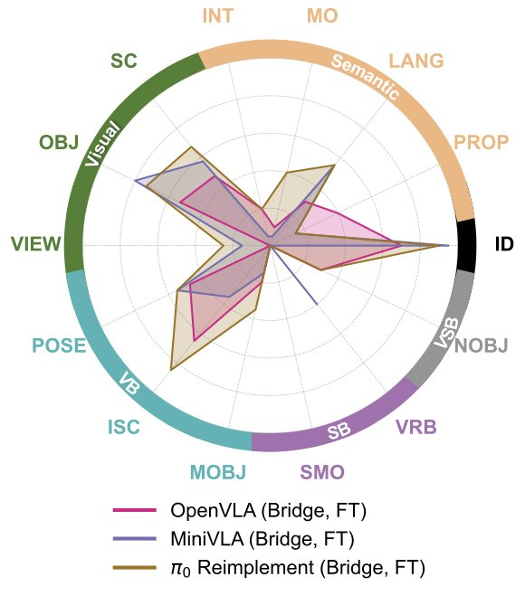
Table 3. Where generalisation gets measured.
| Benchmark | Type | What it reports |
|---|---|---|
| LIBERO | Sim | Saturated above 95%, no longer separates models |
| LIBERO-PRO | Sim | Above 90% → 0% under object-position change |
| LIBERO-Plus | Sim | π₀ 94.2% → 15.8% under viewpoint change |
| Colosseum | Sim | 14 perturbation axes, sim and real do not always agree |
| ⋆-Gen | Real | 22-axis taxonomy, 14 tested on hardware, 1,600+ trials |
| RoboChallenge | Real | Fine-tuned π₀.₅ at 43.7% across 30 tasks |

Laid out together, the scenes make the failure boundary look arbitrary, and that is the point. Nothing separates the conditions that held up from the ones that collapsed except how far each sits from the 10 episodes the policy was trained on. A human looking at these photographs would call all 17 the same task.
8. Open weights, closed everything else
π₀.₅ ships as open weights. Its training data does not ship at all. The total size, the exact composition, and the collection method are unpublished. π₀ was trained on more than 10,000 hours of robot data across several robot types, and π₀.₅ extends that with in-home mobile manipulation data, of which roughly 400 hours is disclosed, plus multimodal web data. Beyond that rough hour count, the composition is not described.
This is not an abstract complaint. It removes a specific method from the table. The standard way to adapt a foundation policy without destroying its general ability is co-training: mix a slice of the original pre-training data into the fine-tuning set so the model keeps its prior while it learns your task. The ⋆-Gen authors ran their own case studies that way. I could not, because the data does not exist outside the lab that collected it. Every result in this article comes from fine-tuning on 10 new demonstrations and nothing else, and the memorisation I measured in section 5 is exactly the failure co-training exists to prevent.
So the honest description of the artefact is narrower than "open source". The weights are open. The inference code is open. The training recipe is partly open. The data is closed, the pre-training configuration is closed, and the channel where you would ask about any of it returns no reply from the project about 3 times in 5.
The counter-argument deserves stating. Collecting hundreds of hours of in-home robot demonstrations is expensive, the data carries real privacy exposure, and no licence obliges anyone to publish it. Releasing weights at all is more than most commercial labs do. None of that is in dispute.
What I would say instead is that the current arrangement quietly transfers a cost. Every team that adapts one of these models re-derives the same undocumented knowledge, and most of them never write it down. The 489 openpi issues are the visible part of that duplicated effort. About 3 in 5 get no reply from the project, and about 1 in 4 get no reply from anyone at all. My own 8 months were largely spent rediscovering things that other people had already found and could not get answered.
The checkpoints themselves have a short shelf life. π₀ gave way to π₀.₅ inside about a year, and the field moves faster than that now. The weights will be superseded. What lasts is the accumulated practical knowledge about how to put these models on real hardware, and that is precisely the part currently stored in unanswered issue threads and in the private notebooks of individual students.
9. Fine-tuning bought the trained condition, not the task
Put the two numbers from the top of this page next to the literature. My policy averaged 0.40 across 17 out-of-distribution conditions. The Penn PAL Lab's π₀-FAST, with no fine-tuning at all, averaged 0.42 on hardware its checkpoint already matched.
A fine-tuned policy, perturbed, lands at roughly the same task progress as an untuned policy on matched hardware. That is the honest summary of what 8 months bought. The trained condition improved a great deal, and the general ability to do the task did not transfer.
The other comparison is more encouraging. In-distribution, 10 episodes, about 13 minutes of demonstrations, reached close to the level that π₀ needed roughly 5 hours of fine-tuning data to reach in its own scaling study. If your deployment condition is genuinely fixed, that is a very cheap way to get a working policy. If it is not fixed, nothing here supports extrapolating.
What I would do on day 1
- Record 1 episode and train on it. It will not work, but if the arm does not move toward the object at all, something in your recording, conversion, serving or bridge is broken.
- Set
warmup_steps=50andsave_interval=30before your first real run. Both defaults assume a training budget 60 times larger than yours. - Reload the pretrained normalisation statistics rather than computing fresh ones from a small dataset.
- Record 10 consistent episodes rather than 40 varied ones.
- Evaluate every checkpoint on the robot in at least one out-of-distribution condition, and sweep the inference horizon before you conclude anything about the model.
What this does not establish
Every run used a single seed, so I have no variance estimate and any individual result could be luck. That is the largest unmeasured risk in the project. LoRA was tested and did not produce a working policy at these settings, which is a weaker claim than saying LoRA does not work: community reports suggest it can match full fine-tuning on small datasets, so the negative result may belong to my configuration rather than to the method. The recipe was validated on one task with a single object, a 30 cm × 30 cm patch and a fixed bin, and whether it survives a longer or more complex task is the obvious next experiment.
Write down what you find
Every checkpoint, every trial score and every dead end from those 87 runs is in the repository, because the thing that cost me 8 months was not compute and it was not the model. It was that the answers existed and were not written down anywhere I could reach them.
So if you put one of these policies on hardware that has no checkpoint waiting for it, and you find something these notes do not cover, publish it. Section 2 is the measurement that makes the case: about 1 in 4 questions asked in the open get no reply from anyone, and on the research-lab trackers the ones that survive a month rarely get one later. Papers report the runs that worked. Whether anything reports the rest is up to whoever writes next.